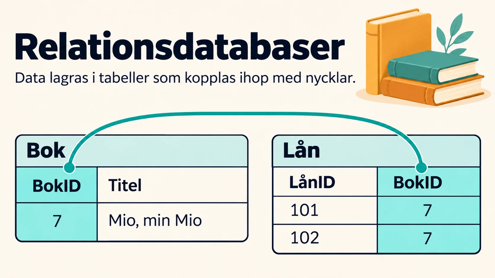

Databaser intro
Kursstart: vad en relationsdatabas är, de centrala begreppen – och hur man ritar en ER-modell som hänger ihop med klasserna du redan kan i C#.
Dagens plan
- Introduktion
- Genomgång av kursplanering
- Veckans mål
- Vad är en relationsdatabas?
- Centrala begrepp
- ER-diagram
- Tre sorters relationer
- ER-diagram ↔ klasser i C#
- Samma modell i C#
- Många till många – i ER och i C#
- Gruppövning: ER-modellering
- Sammanfattning
Presentationen har samma innehåll som den här sidan.
1. Introduktion
Hittills har all data i dina program levt i minnet – i variabler och listor. När programmet stängs är den borta.
List<Customer> customers = new List<Customer>();
customers.Add(new Customer { Name = "Ada" });
// Programmet avslutas … och Ada är bortaEn databas sparar data permanent, så att den finns kvar nästa gång programmet startar – och så att många användare och program kan dela på samma data.
2. Genomgång av kursplanering
| Vecka | Innehåll |
|---|---|
| 1 (v.48) | Relationsdatabaser, centrala begrepp och ER-diagram. Från modell till tabeller i SQL Server. |
| 2 (v.49) | Normalisering (1NF–3NF), constraints, CRUD och JOIN. |
| 3 (v.50) | Authentication och authorization, databasroller, minsta behörighet, SQL-injektion. |
| 4 (v.51) | EF Core: koppla en databas till en konsolapp och göra CRUD. Individuell inlämningsuppgift och muntlig delredovisning av ER-diagram. |
| 5 (v.53) | Projektarbete. |
Den här veckan:
| Dag | Innehåll |
|---|---|
| Måndag | Introduktion, relationsdatabaser, centrala begrepp, ER-diagram |
| Onsdag | Från modell till tabeller i SQL Server |
| Torsdag | Extralektion (digitalt): databasrader och C#-objekt |
| Fredag | Repetition, reflektion och kodgranskning |
Vi går också igenom kursplanen och betygskriterierna. Läs dem själv efter genomgången – då vet du redan från start vad som bedöms.
3. Veckans mål
Efter den här veckan ska du kunna:
- Förklara centrala databasbegrepp.
- Rita en ER-modell för ditt projektcase.
- Skapa en lokal databas med tabeller och nycklar.
Idag jobbar vi med mål 1 och 2. Mål 3 kommer på onsdag.
4. Vad är en relationsdatabas?
En relationsdatabas sparar data i tabeller – ungefär som kalkylblad. Tabellerna kan kopplas ihop med varandra.
| Id | Name | |
|---|---|---|
| 1 | Ada Lovelace | ada@example.com |
| 2 | Linus Torvalds | linus@example.com |
Programmet som sköter databasen kallas DBMS (databashanterare), t.ex. SQL Server, PostgreSQL, MySQL och SQLite. Man pratar med det på språket SQL.



5. Centrala begrepp
| Begrepp | Betyder |
|---|---|
| Databas | En samling data som sparas permanent och hör ihop |
| DBMS | Programmet som lagrar och hämtar datan, t.ex. SQL Server |
| Tabell | Data om en sorts sak, t.ex. Customers |
| Rad (post) | En sak i tabellen, t.ex. kunden Ada |
| Kolumn (fält) | En egenskap som alla rader har, t.ex. Email |
| Relation | Hur saker i olika tabeller hänger ihop, t.ex. en kund och hennes ordrar |
| SQL | Språket man använder för att prata med databasen |
6. ER-diagram
Ett ER-diagram (Entity–Relationship) är en ritning av databasen innan man bygger den.
- Entitet – en sak vi sparar data om (blir en tabell)
- Attribut – egenskaper hos entiteten (blir kolumner)
- Relation – hur entiteterna hänger ihop, med kardinalitet (1 eller många)
erDiagram
CUSTOMER ||--o{ ORDER : "lägger"
CUSTOMER {
int Id
string Name
string Email
}
ORDER {
int Id
date OrderDate
}
||--o{ läses: en kund kan ha noll eller många ordrar, varje order tillhör exakt en kund.
7. Tre sorters relationer
| Relation | Exempel |
|---|---|
| Ett till ett (1–1) | En person har ett pass |
| Ett till många (1–N) | En kund har många ordrar |
| Många till många (N–M) | En student läser många kurser, en kurs har många studenter |
Fråga dig åt båda hållen: "Hur många ordrar kan en kund ha?" och "Hur många kunder kan en order ha?" Svaren ger kardinaliteten.
8. ER-diagram ↔ klasser i C#
Du har redan ritat UML-klassdiagram. Ett ER-diagram är nästan samma sak:
| ER-diagram | Databas | C# |
|---|---|---|
| Entitet | Tabell | Klass |
| Attribut | Kolumn | Egenskap (property) |
| En rad | Rad | Ett objekt |
| Relation | Koppling mellan tabeller | Referens till ett annat objekt |
| "Många"-sidan | Flera rader | List<T> |
9. Samma modell i C#
class Customer
{
public int Id { get; set; }
public string Name { get; set; }
public string Email { get; set; }
public List<Order> Orders { get; set; } = new(); // en kund – många ordrar
}
class Order
{
public int Id { get; set; }
public DateTime OrderDate { get; set; }
public Customer Customer { get; set; } // varje order – en kund
}Entiteten blir en klass, attributen blir egenskaper och relationen blir en referens. Hur databasen själv kopplar ihop tabellerna – med nycklar – går vi igenom på onsdag.
10. Många till många – i ER och i C#
erDiagram
STUDENT }o--o{ COURSE : "läser"
STUDENT {
int Id
string Name
}
COURSE {
int Id
string Title
}
class Student
{
public int Id { get; set; }
public string Name { get; set; }
public List<Course> Courses { get; set; } = new();
}
class Course
{
public int Id { get; set; }
public string Title { get; set; }
public List<Student> Students { get; set; } = new();
}I C# räcker det med en lista på varje sida.
11. Gruppövning: ER-modellering
Del 1 – i grupp: Ett bibliotek vill hålla koll på böcker, författare, låntagare och lån.
- Vilka entiteter finns?
- Vilka attribut behöver varje entitet?
- Vilka relationer finns, och vilken kardinalitet har de? (Kan en bok ha flera författare?)
- Rita ER-diagrammet och skriv motsvarande klasser i C#.
Del 2 – ditt projektcase: Gör samma sak för ditt eget projekt. Rita på papper, i draw.io eller med Mermaid. Spara diagrammet – det redovisas muntligt vecka 4.
12. Sammanfattning
- En relationsdatabas sparar data permanent i tabeller med rader och kolumner.
- Relationer är 1–1, 1–N eller N–M.
- Ett ER-diagram är ritningen: entitet = klass, attribut = egenskap, relation = referens.
- På onsdag: från modell till riktiga tabeller i SQL Server.